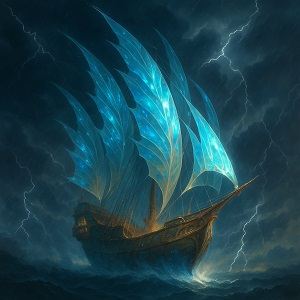
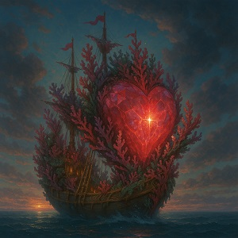
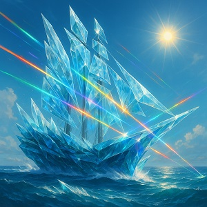

A híres mondás szerint A megfelelő társsal mindent túlélünk
. Így
igaz ez a tengerre is, amely sok természeti és ellenséges csapással vár
minket: akár egy nagyobb vihar vagy egy kalóztámadás is a víz alá
sodorhat. A megfelelő társ ezesetben a megfelelő hajó. Ezen különleges
hajókkal generációk jártak, és minden útjuk sikeres volt. Ismerd meg te
is ezen különleges vízi járműveket!
Három leghíresebb hajó
- Azturisz Szélhajója – Bámulatos hajó, amely villámsebességgel siklik a vízen a természet energiáit kihasználva.
- Szívkő Bárka+ – A szerelem erejével működő hajó, amely aktiválás esetén minden természeti csapástól megvéd.
- Penge-Prizma Naszád – A pengékből álló hajótest megijeszt minden gonosz lelket, és megvédi a hajót az esetleges támadásoktól.
Galéria



Hajótérkép
Bővebb információért látogass el a MarineTraffic oldalra.